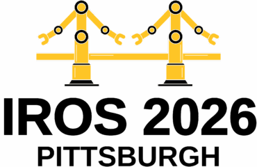
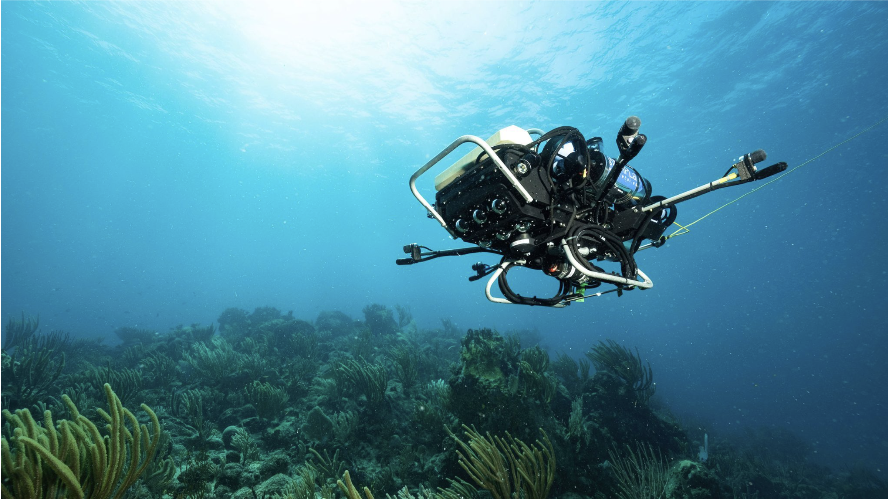
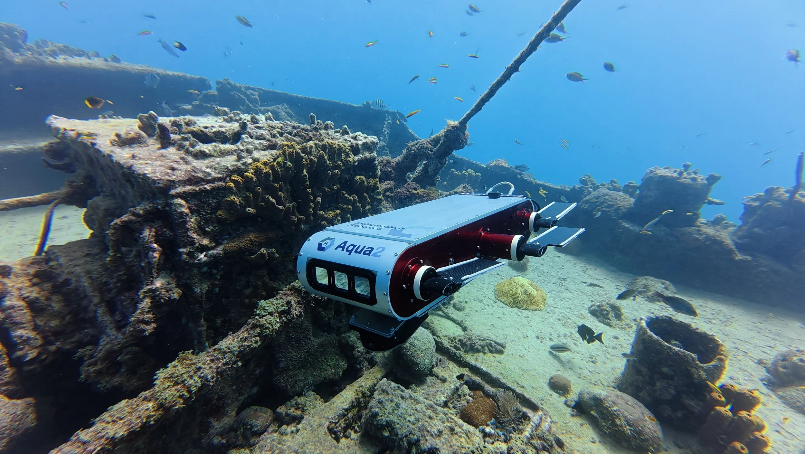
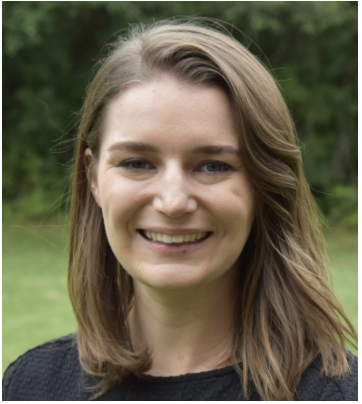
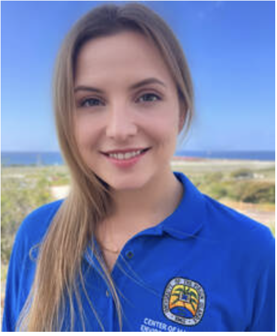
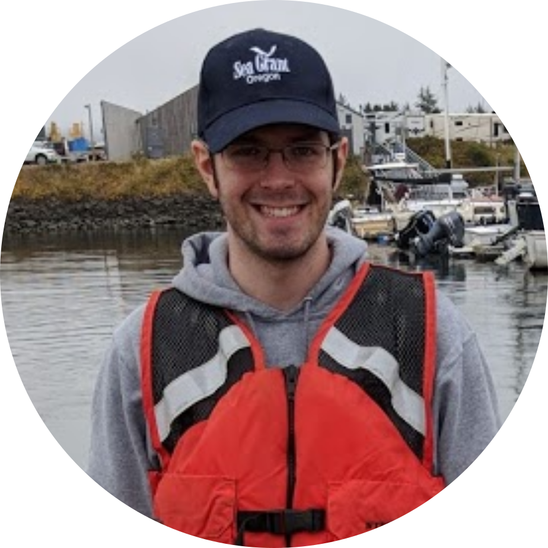
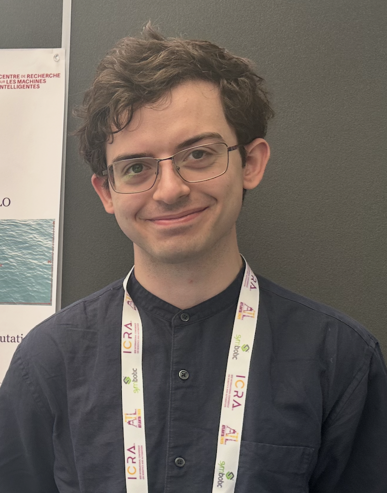

Workshop Overview
Marine robotics operates in environments that break the assumptions behind standard perception and navigation pipelines, from sudden turbidity and GPS-denied conditions to constant current perturbations. This workshop brings together researchers to discuss resilient sensing, state estimation, and mapping methods, grounded in a real-world challenge through an invited talk from a marine biologist on coral reef conservation.

GPS-Denied Operations
Marine robots must operate without GPS, under constant current and wave perturbations, with intermittent communication that limits remote supervision and correction. Localization and navigation pipelines must contend with persistent drift and the difficulty of obtaining reliable ground truth over long-duration missions.

Ocean Autonomy & SLAM
Robust ocean autonomy requires multimodal sensing and fusion across vision, sonar, inertial, and acoustic positioning; mapping and SLAM tailored to low-visibility and dynamic environments; and planning methods that explicitly account for uncertainty, drift, and sensing dropouts.

Bridging Science & Conservation
A unique aspect of this workshop is its grounding in a concrete, real-world mission: an invited talk from a marine biologist will share the on-the-ground challenges of coral reef conservation, giving marine robotics researchers a common reference point to align their technical work with genuine conservation needs.
Featured Speakers
Professor of Mechanical and Ocean Engineering at MIT and CSAIL member who leads the Marine Robotics Group, specializing in navigation and mapping for autonomous underwater and terrestrial robots.
Distinguished James McGill Professor of Computer Science who leads the Mobile Robotics Lab, known for marine field robotics including the amphibious Aqua robot for coral reef monitoring.

Associate Professor of Mechanical Engineering whose research spans perception, computer vision, and machine learning for field robotics across air, land, sea, and space.

Coral reef ecologist who directs UVI's Virgin Islands Center for Autonomous Research, using underwater robotics, 3D imaging, and AI to monitor reef health and marine ecosystems.

Marine roboticist at WHOI developing autonomy and active sensing methods, using AUVs and passive acoustics to map complex coral reef ecosystems.
Call for Papers
Submissions Closed
Submissions for the workshop are now closed. We thank all authors for their contributions.
Accepted authors are invited to present a poster and a lightning talk during the workshop.
View accepted papers on OpenReview ↗Submission deadline: September 1, 2026 (closed)
GPS-Denied Localization
Robust state estimation, acoustic positioning, and inertial navigation under persistent drift from currents and waves.
Low-Visibility SLAM
Simultaneous localization and mapping in turbid, dark, or otherwise unstructured underwater environments.
Multimodal Sensing & Fusion
Cooperative integration of vision, sonar, inertial, acoustic positioning, and GNSS (when available) for resilient perception.
Mapping & 3D Reconstruction
Large-scale, multi-session mapping and structure-from-motion for dynamic, low-visibility environments such as coral reefs.
Marine Robotics Autonomy
Learning-based autonomy and decision-making, including deep learning models for sonar denoising, underwater image restoration, and semantic segmentation.
Planning Under Uncertainty
Navigation and planning methods that explicitly account for uncertainty, drift, and sensing dropouts.
Workshop Schedule
Thursday, October 1, 2026 · 8:30 AM–5:25 PM · Room 325
Morning
8:30 AM–12:30 PM-
Talk
Seth McCammon
-
Talk
Katherine Skinner
Adaptive Marine Perception Under Sensor Degradation
-
Lightning talks
Marine Robotics spotlight
20 accepted Marine Robotics papers
-
Sponsor
Sponsor talk
-
Break + posters
Coffee break & poster session
-
Talk
Lauren Olinger
Past, Present, and Future of Coral Reef Monitoring in the U.S. Virgin Islands
-
Talk
Gregory Dudek
Using AI to Control Fleets of Marine Vehicles
-
Talk
Malika Meghjani
Afternoon
12:30–5:25 PM-
Break
Lunch break
-
Discussion
Panel discussion
-
Lightning talks
AQ²UASIM spotlight
16 accepted AQ²UASIM papers
-
Break + posters
Coffee break & poster session
-
Talk
Scarlett Raine
-
Talk
Giancarlo Troni
-
Talk
John Leonard
Cooperative Perception and Navigation for Underwater Robots
Organizers
Kalvik Jakkala
Texas A&M University
Monika Roznere
Binghamton University
Marios Xanthidis
SINTEF Ocean
Jason O'Kane
Texas A&M University
Yogesh Girdhar
WHOI
Alberto Quattrini Li
Dartmouth College

Edwin Meriaux
McGill University
Steve Wen
McGill University